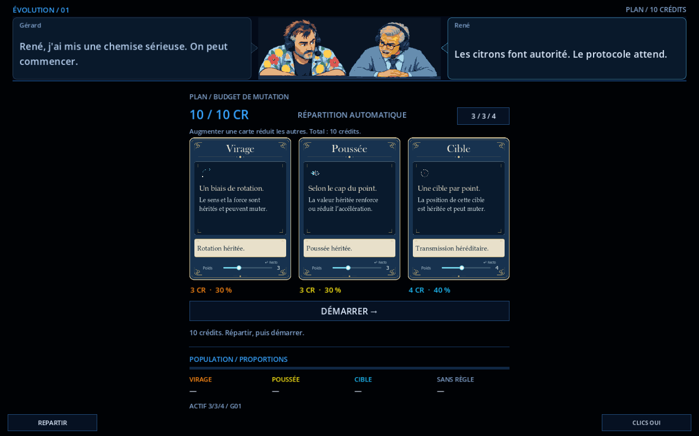
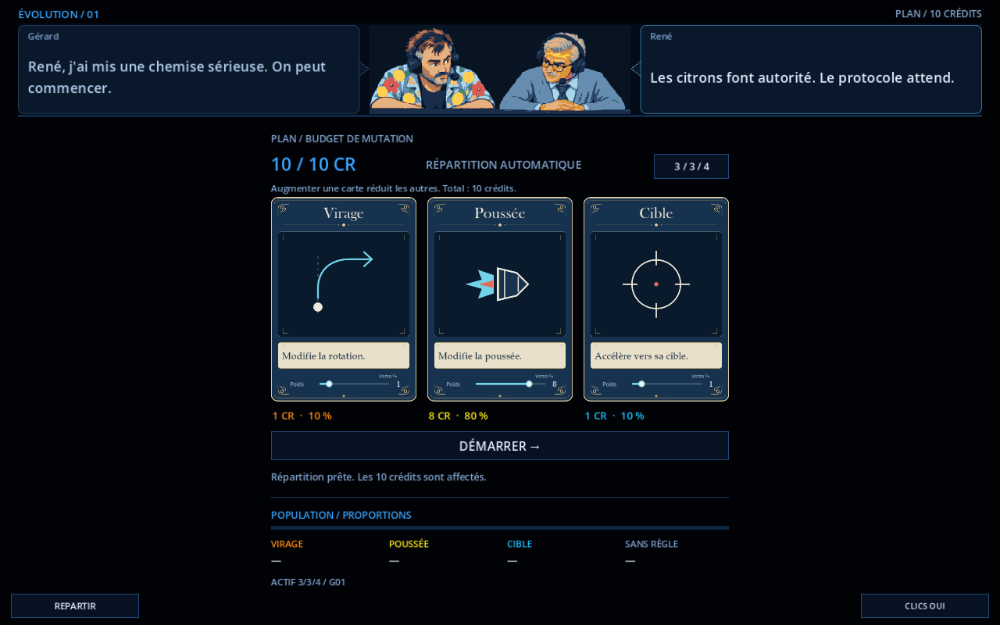
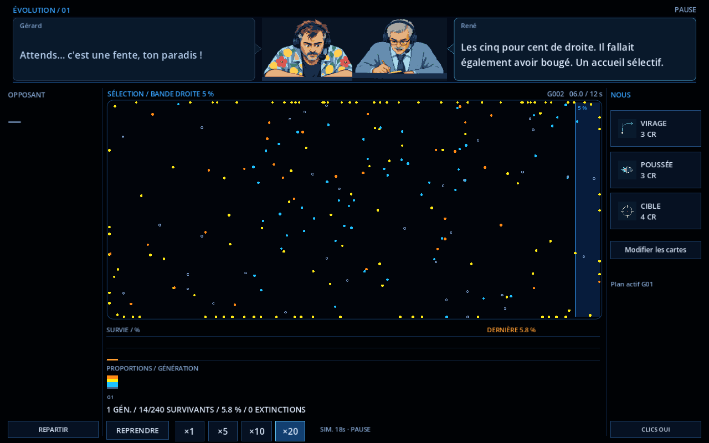

Le duo est réuni au centre. Gérard parle dans la bulle de gauche ; René dans celle de droite. Chaque côté garde sa dernière réplique.

Les trois cartes gardent un total de 10 crédits. Augmenter l’une répartit le reste entre les deux autres. Depuis 3 / 3 / 4, Poussée à 8 donne 1 / 8 / 1. Revenir à 3 pendant le même glissement restaure 3 / 3 / 4.

